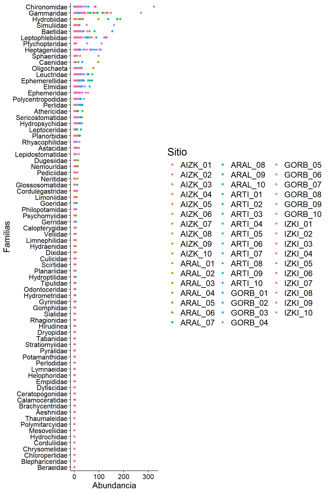
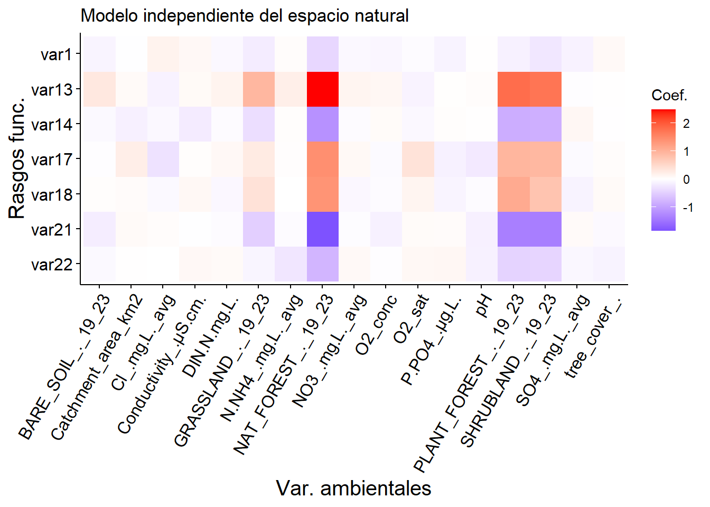
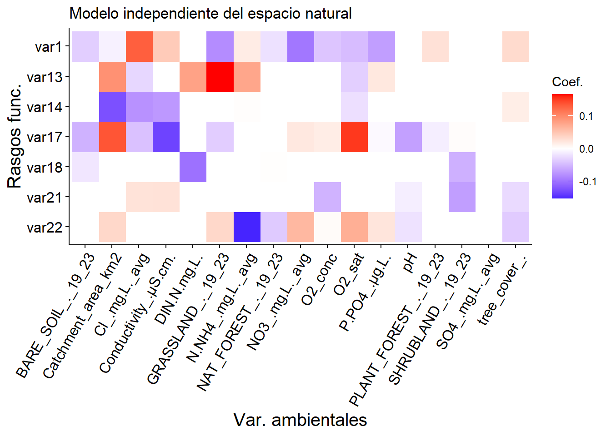
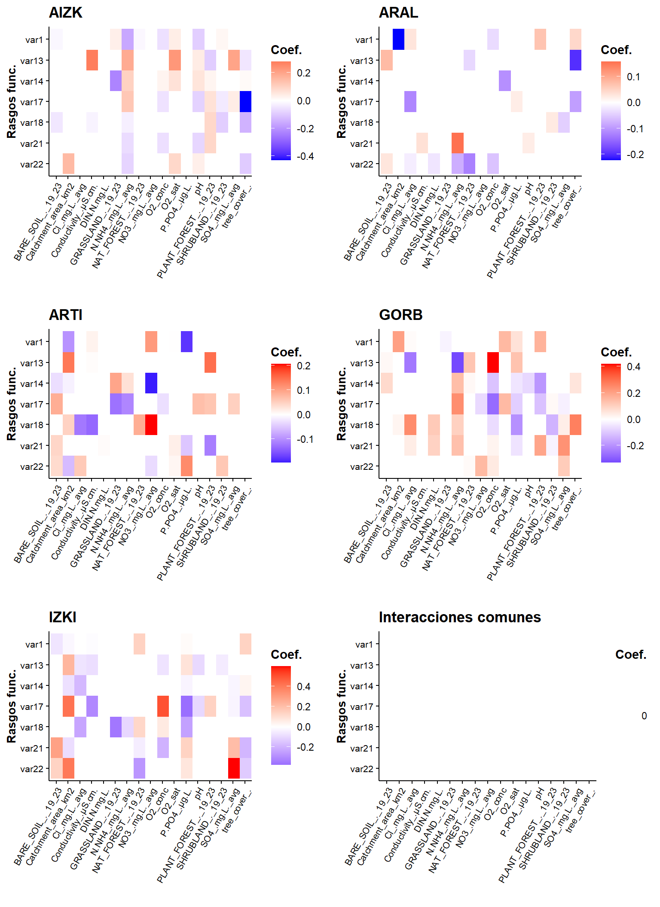

Seminario: SDMs, rasgos funcionales y la cuarta esquina
Diversidad Biológica en los Ambientes de Agua Dulce
Máster en Biodiversidad, Funcionamiento y Gestión de Ecosistemas
Rasgos funcionales y la matriz fourth-corner
Aquí es donde nos quedamos ayer:
Regularización lasso
Lasso (least square shrinkage and selection operator) (Tibshirani 1996) es una forma de regresión que añade una penalización a los coeficientes de mínimos cuadrados, que es el cálculo que se utiliza para encontrar modelos de regresión por comparación de los valores predichos con los observados. Esta penalización puede modificar los coeficientes de las variables del modelo y está controlada por un parámetro, \(\lambda\), que puede tomar valores desde 1 hasta infinito positivo. A medida que \(\lambda\) aumenta, la pendiente de la variable en el modelo mengua. La grandísima ventaja de esto es que lasso es capaz de llevar a cero la pendiente de aquellas variables del modelo que no sean relevantes para explicar los datos, dejando solo aquellas que sí lo sean. Esto nos permite simplificar los modelos y, en general, nuestro trabajo y toma de decisiones. Como recurso, os dejo este vídeo sobre regularización lasso que, aunque en un tono no demasiado serio, consigue explicar bien qué utilidad tiene y cómo funciona. Es ese vídeo oiréis hablar también de la ridge regression, que es muy similar a la regresión lasso pero no es capaz de llevar los coeficientes de las variables poco explicativas a cero.

Lasso está disponible para la aproximación fourth-corner a través del algoritmo glm1path de la función traitglm(), como se puede ver a continuación. Sin embargo, lasso no es un método exclusivo de fourth-corner, sino que se puede aplicar a cualquier regresión que necesite selección de variables, como por ejemplo en el análisis de big data.
# añadimos lasso a través del argumento method = "glm1path"
lasso <- traitglm(L, R, t(Q), method = "glm1path")
# observemos la matriz fourth-corner con lasso
lasso$fourth.corner env1 env2 env3 env4 env5 env6 env7 env8 env9 env10
t1 0 0.000000000 0.0000000000 0 0 0 0.000000000 0 0 0
t2 0 0.000000000 -0.0126001270 0 0 0 0.000000000 0 0 0
t3 0 0.000000000 0.0007411432 0 0 0 0.000000000 0 0 0
t4 0 0.000000000 0.0000000000 0 0 0 0.000000000 0 0 0
t5 0 0.000000000 0.0000000000 0 0 0 0.000000000 0 0 0
t6 0 0.000000000 0.0000000000 0 0 0 0.009344633 0 0 0
t7 0 0.000000000 0.0000000000 0 0 0 0.000000000 0 0 0
t8 0 0.000000000 0.0000000000 0 0 0 0.000000000 0 0 0
t9 0 0.000000000 0.0000000000 0 0 0 0.000000000 0 0 0
t10 0 0.000000000 0.0000000000 0 0 0 0.000000000 0 0 0
t11 0 0.000000000 0.0000000000 0 0 0 0.000000000 0 0 0
t12 0 0.000000000 0.0000000000 0 0 0 0.000000000 0 0 0
t13 0 0.000000000 0.0000000000 0 0 0 0.000000000 0 0 0
t14 0 0.006611215 0.0000000000 0 0 0 0.000000000 0 0 0
t15 0 0.000000000 0.0000000000 0 0 0 0.000000000 0 0 0
env11 env12 env13 env14 env15
t1 0 0 0 0 0.000000000
t2 0 0 0 0 0.000000000
t3 0 0 0 0 0.000000000
t4 0 0 0 0 0.000000000
t5 0 0 0 0 0.000000000
t6 0 0 0 0 0.005031213
t7 0 0 0 0 0.000000000
t8 0 0 0 0 0.000000000
t9 0 0 0 0 0.000000000
t10 0 0 0 0 0.000000000
t11 0 0 0 0 0.000000000
t12 0 0 0 0 0.000000000
t13 0 0 0 0 0.000000000
t14 0 0 0 0 0.000000000
t15 0 0 0 0 0.000000000# y volvemos a representar el mapa de calor
lasso$fourth.corner %>%
as_tibble(rownames = "traits") %>%
pivot_longer(cols = -traits, names_to = "env_var", values_to = "value") %>%
mutate(
value = round(value, 5),
env_var = forcats::fct_inorder(env_var),
traits = forcats::fct_reorder(
traits,
as.numeric(str_extract(traits, "\\d+"))
)
) %>%
# mapa de calor
ggplot(aes(x = env_var, y = fct_rev(traits), fill = value)) +
geom_raster() +
scale_fill_gradient2(
low = "blue",
mid = "white",
high = "red",
midpoint = 0
) +
labs(
x = "Variables ambientales",
y = "Rasgos funcionales",
fill = "Coeficiente"
) +
theme(axis.text.x = element_text(angle = 60, hjust = 1, vjust = 1))
Parte 2 — Aplicación a sistemas fluviales
Base de datos
En esta segunda parte vamos a dejar de lado los datos dummy y, en su lugar, vamos a analizar una base de datos real de macroinvertebrados de agua dulce. Se trata de 76 familias de organismos, desde efímeras hasta gammáridos. La lista completa se puede encontrar usando el siguiente comando: colnames(L), siempre después de haber cargado la matriz L correspondiente (siguiente paso). Los datos proceden de los cinco espacios naturales de los Montes Vascos con los que estamos trabajando: AIZK = Aizkorri (Gipuzkoa), ARAL = Aralar (Gipuzkoa), ARTI = Artikutza (Nafarroa), GORB = Gorbeia (Bizkaia/Araba), e IZKI = Izki (Araba).
Datos de abundancia por localidad (matriz L)
Cargamos la matriz L con el siguiente comando:
L <- read.table("data/L_family.txt")
head(L) Aeshnidae Astacidae Athericidae Baetidae Beraeidae Blephariceridae
AIZK_01 0 0 4 7 0 0
AIZK_02 0 0 2 34 0 0
AIZK_03 0 0 5 7 0 0
AIZK_04 0 0 2 16 0 0
AIZK_05 0 0 5 12 0 0
AIZK_06 0 0 2 1 0 0
Brachycentridae Caenidae Calamoceratidae Calopterygidae Ceratopogonidae
AIZK_01 0 0 0 0 2
AIZK_02 0 0 0 0 0
AIZK_03 0 1 0 0 0
AIZK_04 0 0 0 0 1
AIZK_05 0 0 0 0 0
AIZK_06 0 0 0 0 0
Chironomidae Chloroperlidae Chrysomelidae Cordulegastridae Corduliidae
AIZK_01 12 0 0 0 0
AIZK_02 12 0 0 0 0
AIZK_03 10 0 0 0 0
AIZK_04 6 0 0 0 0
AIZK_05 22 0 0 1 0
AIZK_06 0 0 0 0 0
Culicidae Dixidae Dryopidae Dugesiidae Dytiscidae Elmidae Empididae
AIZK_01 0 1 0 5 1 0 0
AIZK_02 0 0 0 0 0 3 0
AIZK_03 0 0 0 0 0 5 0
AIZK_04 0 2 0 4 0 4 0
AIZK_05 0 1 0 1 0 0 1
AIZK_06 0 0 0 1 1 0 0
Ephemerellidae Ephemeridae Gammaridae Gerridae Glossosomatidae Goeridae
AIZK_01 0 2 0 0 0 0
AIZK_02 0 1 0 1 0 0
AIZK_03 3 0 0 4 0 1
AIZK_04 6 0 0 2 0 0
AIZK_05 3 10 0 4 0 0
AIZK_06 1 0 0 0 0 0
Gomphidae Gyrinidae Helophoridae Heptageniidae Hirudinea Hydraenidae
AIZK_01 0 0 0 10 0 0
AIZK_02 0 0 0 4 0 0
AIZK_03 0 0 0 4 0 0
AIZK_04 0 0 1 19 1 0
AIZK_05 4 0 1 15 0 1
AIZK_06 0 0 0 5 1 1
Hydrobiidae Hydrochidae Hydrometridae Hydropsychidae Hydroptilidae
AIZK_01 1 0 0 0 0
AIZK_02 0 0 0 7 0
AIZK_03 0 0 0 10 1
AIZK_04 4 0 3 3 0
AIZK_05 27 0 2 0 0
AIZK_06 0 0 0 0 0
Lepidostomatidae Leptoceridae Leptophlebiidae Leuctridae Limnephilidae
AIZK_01 0 0 121 15 0
AIZK_02 0 0 5 6 0
AIZK_03 0 4 9 27 0
AIZK_04 0 0 4 22 6
AIZK_05 0 0 70 12 4
AIZK_06 3 0 17 22 0
Limoniidae Lymnaeidae Mesoveliidae Nemouridae Neritidae Odontoceridae
AIZK_01 5 0 0 3 0 1
AIZK_02 1 0 0 0 0 0
AIZK_03 1 0 0 6 0 0
AIZK_04 1 0 0 7 0 0
AIZK_05 10 0 0 0 0 2
AIZK_06 4 0 0 1 0 0
Oligochaeta Pediciidae Perlidae Perlodidae Philopotamidae Planariidae
AIZK_01 4 0 1 0 0 0
AIZK_02 0 0 3 0 0 0
AIZK_03 0 0 2 0 0 0
AIZK_04 3 1 0 0 0 2
AIZK_05 28 0 2 0 0 0
AIZK_06 0 0 0 0 0 0
Planorbidae Polycentropodidae Polymitarcyidae Potamanthidae
AIZK_01 0 0 0 0
AIZK_02 0 0 0 0
AIZK_03 0 19 0 0
AIZK_04 6 7 0 0
AIZK_05 1 2 0 0
AIZK_06 0 0 0 0
Psychomyiidae Ptychopteridae Pyralidae Rhagionidae Rhyacophilidae
AIZK_01 0 0 0 0 0
AIZK_02 0 0 1 1 1
AIZK_03 0 0 0 3 4
AIZK_04 0 0 0 2 4
AIZK_05 0 0 0 1 5
AIZK_06 0 0 1 1 0
Scirtidae Sericostomatidae Sialidae Simuliidae Sphaeriidae
AIZK_01 2 15 0 1 0
AIZK_02 0 2 0 0 0
AIZK_03 0 4 0 2 0
AIZK_04 0 2 1 5 0
AIZK_05 1 32 0 8 1
AIZK_06 0 2 0 1 0
Stratiomyiidae Tabanidae Thaumaleidae Tipulidae Veliidae
AIZK_01 0 0 0 0 4
AIZK_02 0 0 0 0 0
AIZK_03 0 0 0 0 0
AIZK_04 0 0 0 0 1
AIZK_05 0 0 0 0 0
AIZK_06 0 0 1 1 0Datos de rasgos por familia (matriz Q)
Cargamos ahora la matriz Q de rasgos funcionales por familia:
Q <- read.table("data/Q_family.txt")
head(Q) var1 var13 var14 var17 var18 var21 var22
Aeshnidae 5.591 3.500 1.417 1.421 1.684 2.955 4.500
Astacidae 7.000 3.000 1.100 2.533 1.100 2.500 4.500
Athericidae 4.500 3.214 2.000 2.222 1.375 2.636 5.750
Baetidae 3.045 3.697 1.367 2.357 2.081 2.973 4.915
Beraeidae 2.833 2.619 1.222 2.158 1.857 1.812 5.240
Blephariceridae 3.000 2.750 2.000 4.000 1.000 1.545 0.000En la tabla siguiente se muestra la descripción de los rasgos funcionales de los organismos. A tener en cuenta: los valores de los rasgos se corresponden con los valores mostrados como columnas. Esto quiere decir que, por ejemplo, si la variable 1 (var1) tiene un valor de 1.33, ese organismo puede alcanzar un tamaño máximo de entre 0.25cm y 5cm, pero es más probable que su tamaño sea de 0.25cm o menor (porque 1.33 está más cerca de 1 que de 2). A esto se le llama fuzzy-coding los datos de rasgos funcionales.
| 1 | 2 | 3 | 4 | 5 | 6 | 7 | |
|---|---|---|---|---|---|---|---|
| Tamaño potencial máximo del organismo | |||||||
| var1 | X0.25cm | X0.250.5cm | X0.51cm | X12cm | X24cm | X48cm | X8cm |
| Distribución longitudinal | |||||||
| var13 | crenon | epirithron | metarithron | hyporithron | epipotamon | metapotamon | estuary |
| Altitud en la que se encuentra | |||||||
| var14 | lowlands | piedmont.level | alpine.level | ||||
| Velocidad de corriente (preferencia) | |||||||
| var17 | null | slow.less.25.cms | medium.25.50.cmlesss | fast.more.50.cms | |||
| Status trófico (preferencia) | |||||||
| var18 | oligotrophic | mesotrophic | eutrophic | ||||
| Saprobicidad (preferencia) | |||||||
| var21 | xenosaprobic | oligosaprobic | b.mesosaprobic | a.mesosaprobic | polysaprobic | ||
| pH del medio (preferencia) | |||||||
| var22 | less.4 | more.4.4.5 | more.4.5.5 | more.5.5.5 | more.5.5.6 | more.6 | |
Datos de variables ambientales por localidad (matriz R)
Y, finalmente, cargamos la matriz R con las variables ambientales:
R <- read.table("data/R_family.txt")
head(R) pH Conductivity_.µS.cm. O2_sat O2_conc Cl_.mg.L._avg SO4_.mg.L._avg
AIZK_01 7.373 170.2 95.0 9.30 4.780000 11.283333
AIZK_02 7.125 86.9 98.5 9.56 4.003333 10.913333
AIZK_03 7.445 113.9 99.1 9.54 3.730000 9.566667
AIZK_04 7.112 78.1 97.2 9.41 4.913333 7.843333
AIZK_05 6.910 53.8 98.6 6.62 4.026667 6.063333
AIZK_06 6.701 50.2 97.7 9.69 3.013333 5.403333
NO3_.mg.L._avg N.NH4_.mg.L._avg DIN.N.mg.L. P.PO4_.µg.L. tree_cover_.
AIZK_01 1.2100000 0.012193333 0.2855336 21.033333 97.552
AIZK_02 1.2000000 0.005794444 0.2768757 6.863333 69.316
AIZK_03 1.0666667 0.021901111 0.2628622 18.420000 81.172
AIZK_04 1.5633333 0.010363333 0.3635220 12.816667 82.316
AIZK_05 1.1966667 0.009194444 0.2795227 13.484444 79.612
AIZK_06 0.9233333 0.009027778 0.2176097 6.326667 83.200
BARE_SOIL_._19_23 GRASSLAND_._19_23 SHRUBLAND_._19_23
AIZK_01 0.060238742 0.03189473 0.06953472
AIZK_02 0.000000000 0.00000000 0.03952005
AIZK_03 0.009482969 0.03254648 0.07456656
AIZK_04 0.000000000 0.04556714 0.09965969
AIZK_05 0.000197384 0.05699207 0.06273227
AIZK_06 0.000000000 0.01101770 0.09793597
NAT_FOREST_._19_23 PLANT_FOREST_._19_23 Catchment_area_km2
AIZK_01 0.5867378 0.2515940 1.2140284
AIZK_02 0.4985319 0.4619480 0.7580702
AIZK_03 0.5095494 0.3737038 10.5100850
AIZK_04 0.4331083 0.4212126 3.5670113
AIZK_05 0.5095041 0.3702867 2.2891693
AIZK_06 0.7579065 0.1331398 1.2565375En la siguiente tabla se proporciona información sobre el significado de las variables ambientales medidas en los espacios naturales muestreados.
| Variable | Descripción |
|---|---|
| pH | Valores de pH en el medio |
| Conductivity_.µS.cm. | Conductividad (microS/cm) |
| O2_sat | Saturación de oxígeno (%) |
| O2_conc | Concentración de oxígeno (mg/L) |
| Cl_.mg.L._avg | Concentración de cloruro (mg/L) |
| SO4_.mg.L._avg | Concentración de sulfato (mg/L) |
| NO3_.mg.L._avg | Concentración de nitrato (mg/L) |
| N.NH4_.mg.L._avg | Concentración de amonio (mg/L) |
| DIN.N.mg.L. | Concentración de nitrógeno (mg/L) |
| P.PO4_.µg.L. | Concentración de fosfato (mg/L) |
| tree_cover_. | Cobertura arbórea (%) |
| BARE_SOIL_._19_23 | Cobertura de suelo descubierto (%) |
| GRASSLAND_._19_23 | Cobertura de praderas (%) |
| SHRUBLAND_._19_23 | Cobertura arbustiva (%) |
| NAT_FOREST_._19_23 | Cobertura de bosque natural (%) |
| PLANT_FOREST_._19_23 | Cobertura de plantaciones (%) |
| Catchment_area_km2 | Área de muestreo (km2) |
Análisis de datos
El objetivo es calcular las interacciones significativas entre los rasgos funcionales y las variables ambientales que nos ayuden a explicar la distribución de la abundancia de los diferentes organismos. Para ello, comenzaremos visualizando los datos y, después, utilizaremos la función traitglm() del paquete mvabund tal y como vimos anteriormente: primero, sin penalización lasso y, segundo, con ella para seleccionar interacciones.
Exploración de los datos
Vamos a hacer un par de gráficos que nos ayuden a entender mejor qué datos tenemos.
# plot de abundancia por sitio
L %>%
# rownames (sites) to column to plot
rownames_to_column(var = "site") %>%
# transformamos la matrix para poder hacer el plot
pivot_longer(cols = -site, names_to = "species", values_to = "abundance") %>%
# añadimos el plot
ggplot(aes(
x = abundance,
y = reorder(species, abundance, FUN = max),
color = site
)) +
geom_point() + # gráfico de puntos
labs(x = "Abundancia", y = "Familias", color = "Sitio") +
theme(text = element_text(size = 18))
¿Se parece esta distribución de las abundancias a la que teníamos anteriormente para los datos dummy?
Interacción rasgos-ambiente, con y sin penalización lasso
Vamos ahora directamente a resolver la pregunta que nos interesa, para lo cual utilizaremos las tres matrices como argumentos de traitglm(), y representamos gráficamente la matriz de interacciones seleccionada. Lo hacemos para ambos modelos, sin lasso y con lasso (recordamos: method = glm1path) y los representamos.
Primero sin lasso:
f.corner <- traitglm(L, R, Q)
f.corner$fourth.corner %>%
as_tibble(rownames = "traits") %>%
pivot_longer(cols = -traits, names_to = "env_var", values_to = "value") %>%
mutate(
value = round(value, 5),
env_var = factor(env_var, levels = sort(unique(env_var))),
traits = factor(traits, levels = sort(unique(traits), decreasing = TRUE))
) %>%
# mapa de calor
ggplot(aes(x = env_var, y = traits, fill = value)) +
geom_raster() +
scale_fill_gradient2(
low = "blue",
mid = "white",
high = "red",
midpoint = 0
) +
labs(
title = "Modelo independiente del espacio natural",
x = "Var. ambientales",
y = "Rasgos func.",
fill = "Coef."
) +
theme(axis.text.x = element_text(angle = 60, hjust = 1, vjust = 1))
Y después con lasso:
lasso <- traitglm(L, R, Q, method = "glm1path")
lasso$fourth.corner %>%
as_tibble(rownames = "traits") %>%
pivot_longer(cols = -traits, names_to = "env_var", values_to = "value") %>%
mutate(
value = round(value, 5),
env_var = factor(env_var, levels = sort(unique(env_var))),
traits = factor(traits, levels = sort(unique(traits), decreasing = TRUE))
) %>%
# mapa de calor
ggplot(aes(x = env_var, y = traits, fill = value)) +
geom_raster() +
scale_fill_gradient2(
low = "blue",
mid = "white",
high = "red",
midpoint = 0
) +
labs(
title = "Modelo independiente del espacio natural",
x = "Var. ambientales",
y = "Rasgos func.",
fill = "Coef."
) +
theme(axis.text.x = element_text(angle = 60, hjust = 1, vjust = 1))
¿Qué está pasando aquí? ¿Por qué parece que hay menos interacciones seleccionadas para el gráfico sin lasso (izquierda) que para el gráfico con lasso (derecha)? Vamos a ver las matrices de interacciones:
print(f.corner$fourth.corner) pH Conductivity_.µS.cm. O2_sat O2_conc Cl_.mg.L._avg
var1 0.01315904 0.08485679 -0.04385779 -0.09429455 0.159752592
var13 0.03724744 0.07064226 -0.12026136 0.10177320 -0.130719892
var14 0.01182520 -0.20460362 -0.06799693 0.05762894 -0.068914605
var17 -0.22817063 0.03082527 0.36298936 -0.05095678 -0.308052877
var18 -0.04010953 0.09273085 0.12981674 -0.03694424 -0.066904964
var21 -0.15739570 -0.01029542 0.05778800 -0.14558510 0.037993393
var22 -0.14464822 0.08830754 0.09045460 -0.02330884 -0.003115431
SO4_.mg.L._avg NO3_.mg.L._avg N.NH4_.mg.L._avg DIN.N.mg.L. P.PO4_.µg.L.
var1 -0.13424086 -0.07621326 0.038806233 -0.07479167 -0.12263507
var13 -0.01803699 0.13607971 0.210911512 0.14646150 0.01439262
var14 0.10573982 -0.03919476 0.026474914 -0.03816324 0.02472374
var17 -0.05487787 0.08396887 0.020640364 0.08532485 -0.14851299
var18 -0.12750873 -0.08065156 0.001747011 -0.08096013 -0.11096515
var21 0.05871555 -0.03579921 -0.045194207 -0.03805644 0.04864642
var22 -0.08757983 0.07776019 -0.260557410 0.06612103 0.10116822
tree_cover_. BARE_SOIL_._19_23 GRASSLAND_._19_23 SHRUBLAND_._19_23
var1 0.079114951 -0.11543830 -0.1971582 -0.2500568
var13 0.012928469 0.29542957 0.9264349 1.7104471
var14 -0.005695622 -0.06749943 -0.3468541 -0.8438421
var17 0.041052274 -0.01778968 0.2630383 0.9119774
var18 0.064415597 0.02771697 0.3715773 0.7648960
var21 -0.060071252 -0.18598408 -0.5006729 -1.3722988
var22 -0.122324576 -0.06634006 -0.1087394 -0.4405074
NAT_FOREST_._19_23 PLANT_FOREST_._19_23 Catchment_area_km2
var1 -0.4186024 -0.1426231 -0.01484885
var13 2.4691483 1.7927658 0.06448584
var14 -1.1708913 -0.8676686 -0.15495297
var17 1.4136504 0.9392763 0.22122586
var18 1.3579632 1.0860101 0.05005877
var21 -1.8517342 -1.3649009 0.06347529
var22 -0.7797123 -0.4636749 0.01265808print(lasso$fourth.corner) pH Conductivity_.µS.cm. O2_sat O2_conc Cl_.mg.L._avg
var1 0.00000000 0.04532127 -0.04740023 -0.040929013 0.13017623
var13 0.00000000 0.00000000 -0.03418713 0.000000000 -0.02853290
var14 0.00000000 -0.07377945 -0.02252036 0.000000000 -0.07853568
var17 -0.06788648 -0.13447846 0.15216154 0.015706817 -0.04396393
var18 0.00000000 0.00000000 0.00000000 0.000000000 0.00000000
var21 -0.01216116 0.02524483 0.00000000 -0.054184873 0.02458062
var22 -0.02059854 0.00000000 0.06917813 0.003542237 0.00000000
SO4_.mg.L._avg NO3_.mg.L._avg N.NH4_.mg.L._avg DIN.N.mg.L. P.PO4_.µg.L.
var1 0 -0.09755478 0.016320134 0.00000000 -0.069472661
var13 0 0.00000000 0.076288129 0.07944128 0.020166768
var14 0 0.00000000 0.001604626 0.00000000 0.000000000
var17 0 0.01974271 0.000000000 0.00000000 -0.004395314
var18 0 0.00000000 0.000000000 -0.10166980 0.000000000
var21 0 0.00000000 0.000000000 0.00000000 0.000000000
var22 0 0.06100831 -0.153173000 0.00000000 0.022676177
tree_cover_. BARE_SOIL_._19_23 GRASSLAND_._19_23 SHRUBLAND_._19_23
var1 0.03139716 -0.03484952 -0.08209893 0.000000000
var13 0.00000000 0.00000000 0.16596512 0.000000000
var14 0.01500141 0.00000000 0.00000000 0.000000000
var17 0.00000000 -0.05502395 -0.03508282 0.002630367
var18 0.00000000 -0.01780711 0.00000000 -0.056330545
var21 -0.02603755 0.00000000 0.00000000 -0.069400967
var22 -0.03645761 0.00000000 0.03377143 0.000000000
NAT_FOREST_._19_23 PLANT_FOREST_._19_23 Catchment_area_km2
var1 -0.021488948 0.02589767 -0.009847158
var13 0.000000000 0.00000000 0.093095220
var14 0.000000000 0.00000000 -0.125846106
var17 0.000000000 -0.01222346 0.136464856
var18 0.001169351 0.00000000 0.000000000
var21 0.000000000 0.00000000 0.000000000
var22 -0.037800510 0.00000000 0.034095625Como vemos, hemos de ir con ojo con las representaciones visuales, ya que una escala de colores puede darnos una idea errónea de los resultados.
Ejercicio — Parte 2
El objetivo de este ejercicio final es resolver la siguiente pregunta: ¿qué ocurre con las interacciones rasgo-ambiente si analizamos cada espacio natural por separado?
Pista: primero tenemos que seleccionar solamente las filas que correspondan al espacio natural que nos interese. Esto lo podemos hacer con la función
grepl()del siguiente modo:X[grepl("CODE", rownames(X)), ], siendoXla matriz que corresponda y siendoCODEel código del espacio natural deseado. El resto del proceso es idéntico a lo explicado anteriormente:traitglm()con las tres matrices y el argumento para usar lasso.
Aquí los resultados:

Referencias
Tibshirani, R. (1996). Regression Shrinkage and Selection via the Lasso. Journal of the Royal Statistical Society. Series B (Methodological), 58, 267-288.